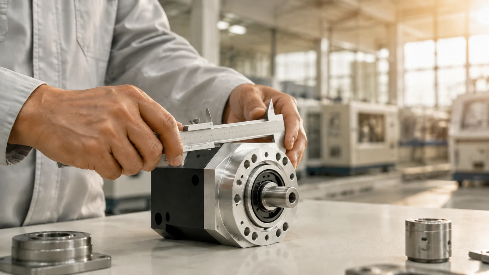
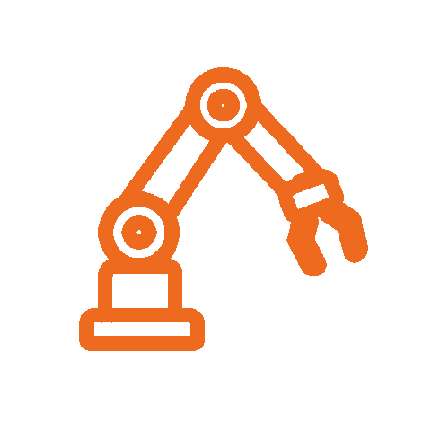
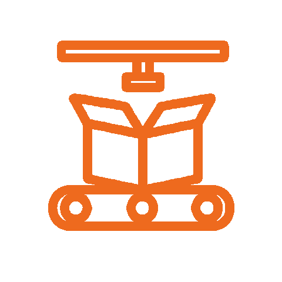
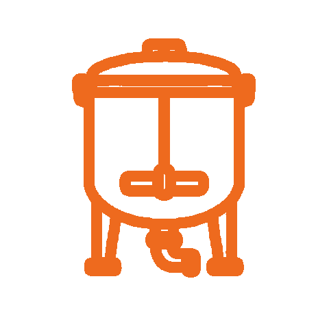
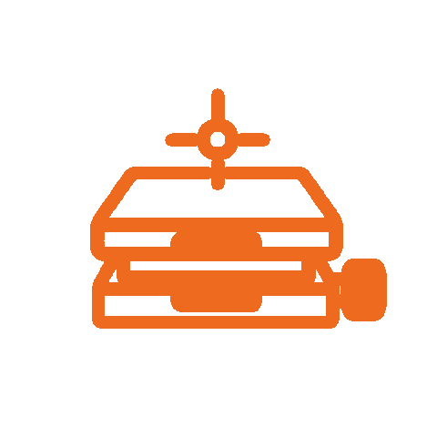

SELECTION SUPPORT｜選型支援
「我知道設備要怎麼動，
但不知道該選哪一顆。」
這可能是我們最常收到的問題。
選馬達與減速機，不只是看功率夠不夠。
負載、轉速、扭矩、減速比、慣量與安裝空間，都可能影響最後的選擇。
你不需要先把所有型號研究完。
提供設備條件、圖面或目前使用的型號，
我們協助你縮小選擇、確認規格與搭配。

BRANDS｜代理品牌
不追求最多品牌，
只留下真正值得推薦的選擇。
我們與日本、歐洲及台灣自動化品牌合作，
聚焦於動力、傳動與驅動控制產品。

Servo Motors & Drives
高性能伺服馬達與驅動控制系統

Precision Gearboxes
高精度行星減速機與傳動元件

Motion Control
工業自動化驅動與運動控制元件
APPLICATIONS｜應用產業
從零件規格，更要看它最後裝在哪裡。
同樣一顆馬達，用在高速包裝設備與搬運設備，
需要考慮的條件並不相同。

自動化設備
AUTOMATION
精準定位、高頻啟停與穩定控制。

包裝機械
PACKAGING
因應高速生產、連續運轉與同步控制需求。

食品機械
FOOD MACHINERY
依設備運轉方式、空間與環境需求配置適合產品。

精密設備
PRECISION MACHINERY
針對精度、背隙、慣量與穩定性進行選型。
選型支援
依負載、轉速、扭矩協助縮小選擇
替代方案
停產或交期過長，依規格評估替換
整合供應
馬達、減速機、驅動一次確認
技術服務
選型、採購到後續使用持續支援
WHY MOTION LINK
你需要的不是更多型號，
而是更快找到對的那一個。
MOTION LINK｜動聯國際
不確定怎麼選、原型號不好買、不想一家一家問，是我們最常收到的問題。
提供負載、轉速、扭矩或設備圖面，我們協助縮小產品選擇；遇到交期過長、停產或供應問題，可依現有規格評估替代產品。馬達、減速機與驅動器一次確認，從選型、採購到後續使用，都找得到懂產品的人。
填需求，協助我選型ABOUT｜關於動聯
少一點產品，
多一點真正適合的選擇。
MOTION LINK 動聯國際有限公司專注於工業自動化的動力與傳動元件代理。
我們不希望成為產品最多的工控供應商。
相較於把整本型錄交給客戶，我們更在意的是理解設備條件，再從合作品牌中找到真正適合的產品。
從新設備開發、既有型號替換，到馬達與減速機搭配，
讓工程師與採購少花一點時間找料，把時間留給設備本身。

NEED HELP WITH SELECTION?
有規格、有圖面，
甚至只有設備需求，都可以問。
告訴我們你正在找什麼。
已有型號可以直接提供；還不知道型號，也可以從設備條件開始。
sales@motionlink.com.tw ／ 04-2297-1930